Conocimiento y lugares por descubrirTodo está
Todo está
conectado.
La música con el cine. La ciencia con la vida. La cultura con cada lugar. Encuentra tu próxima curiosidad en nuestra red de proyectos.
12 enciclopedias temáticas5 guías locales6 webs y portales complementariosUna red · Múltiples caminos
Elige una puerta de entrada
16 proyectos en esta selecciónExplora por lo que te interesa.
Cada proyecto conserva su identidad y su dominio. Los enlaces abren sus webs originales.
 Enciclopedias
Enciclopedias Enciclopedias
Enciclopedias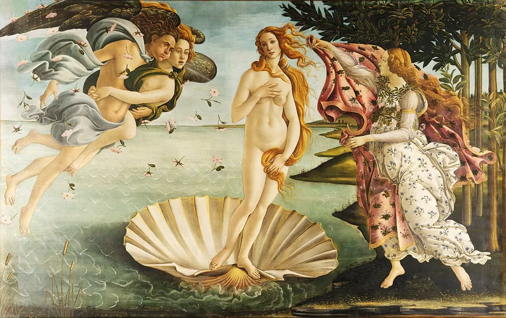
Enciclopedias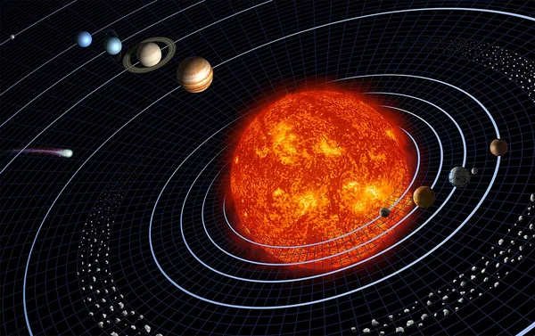
Enciclopedias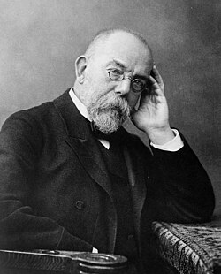
Enciclopedias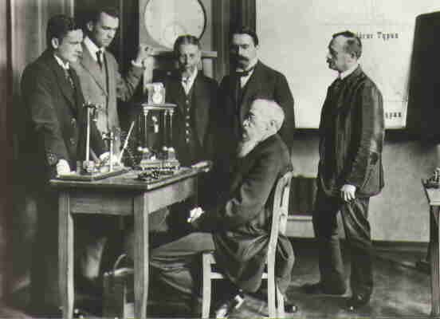
Enciclopedias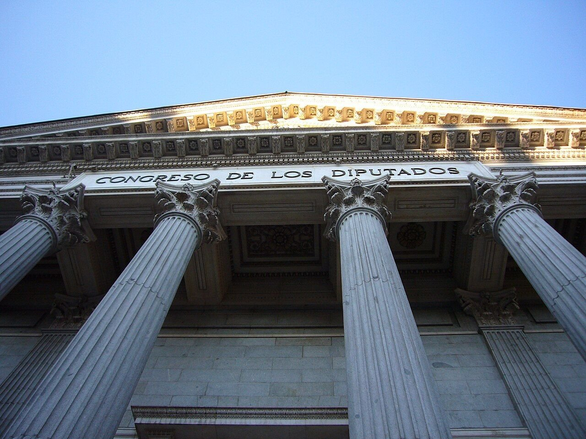
Enciclopedias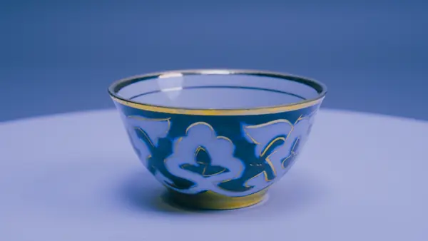
Enciclopedias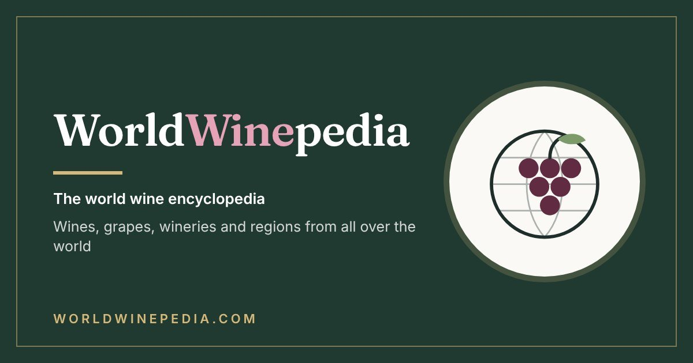
Enciclopedias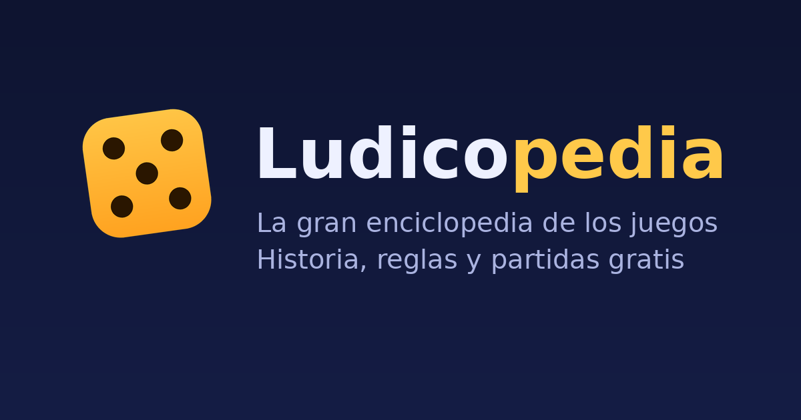
Enciclopedias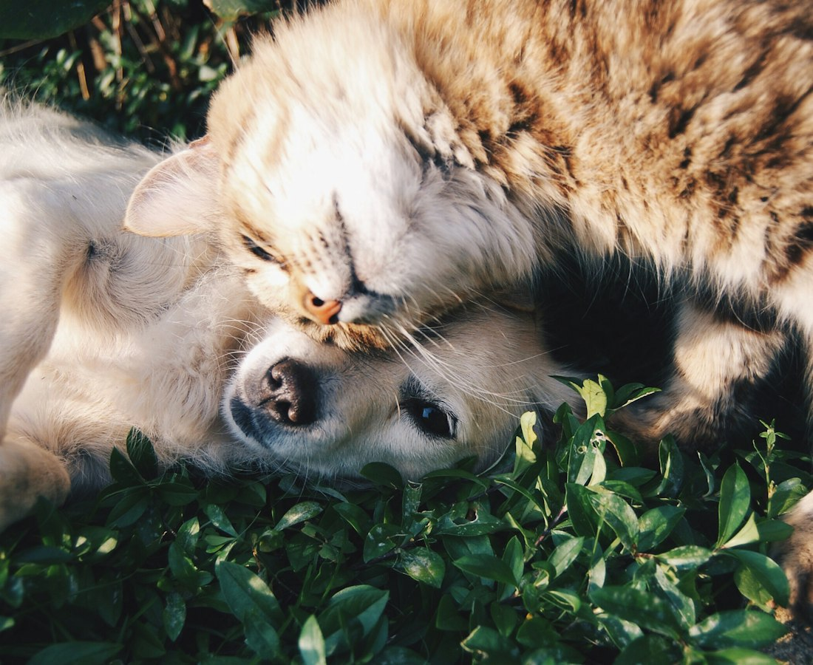
Enciclopedias Enciclopedias
EnciclopediasTecnología e inteligencia artificial
IApedia
Inteligencia artificial desde cero: historia, conceptos, protagonistas y aplicaciones prácticas.
No hay coincidencias. Cambia los filtros o prueba otra búsqueda.
IApedia · Inteligencia artificial desde cero
Historia, conceptos y práctica para comprender la IA y aplicarla en el día a día.
Una curiosidad lleva a la siguiente
Conecta ideas. Descubre otros mundos.
Itinerarios editoriales propuestos que enlazan las portadas de proyectos afines.
El arte de contar historias
Mitología, literatura, pintura y cine.
La mente que aprende
De los procesos psicológicos al estudio y al juego.
Salud con perspectiva
Historia, medicamentos y cuidados.
Del universo al paisaje
De las ideas científicas al territorio.
Sabores con historia
Gastronomía, vino y destinos cercanos.
La música y sus mundos
Sonido, pensamiento, pintura y pantalla.
Decidir y vivir mejor
Normas, decisiones y consumo.
El Garraf a un clic
Una comarca y sus guías municipales.
El mapa de relaciones
Ningún proyecto es una isla.
Selecciona una web y descubre qué otras pueden ampliar tu recorrido.
Tu punto de partida
Classicapedia
Compositores, intérpretes y la historia de la música clásica.
Del conocimiento al territorio
Lugares con mucho que contar.
Las imágenes de sus portadas ayudan a reconocer cada guía antes de entrar.
GUÍA LOCALSitges ↗
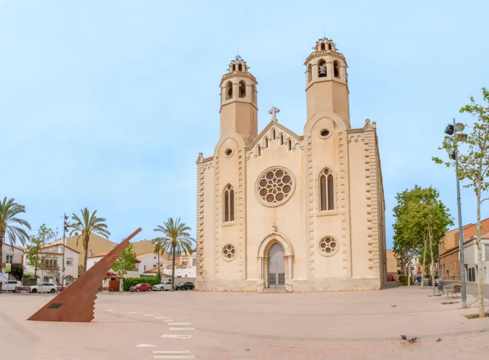
GUÍA LOCALSant Pere de Ribes ↗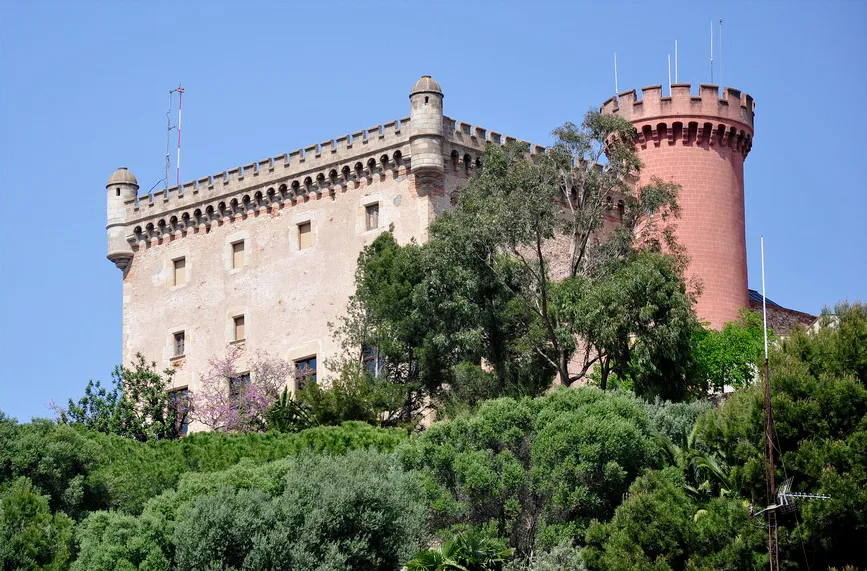
GUÍA LOCALCastelldefels ↗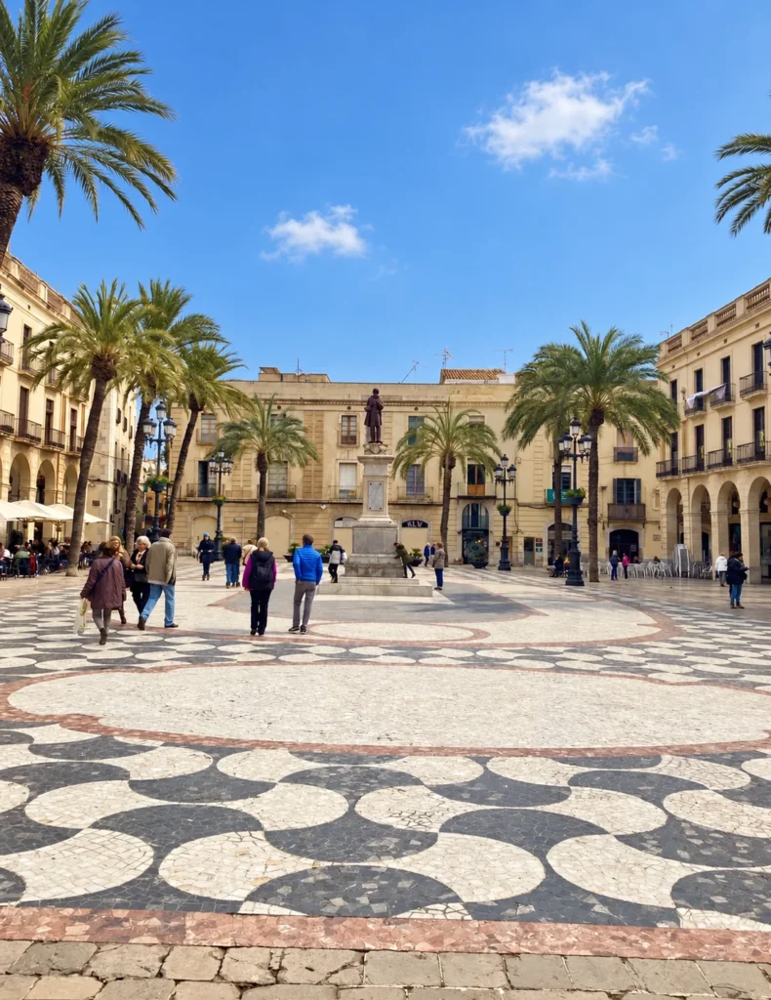
GUÍA LOCALVilanova i la Geltrú ↗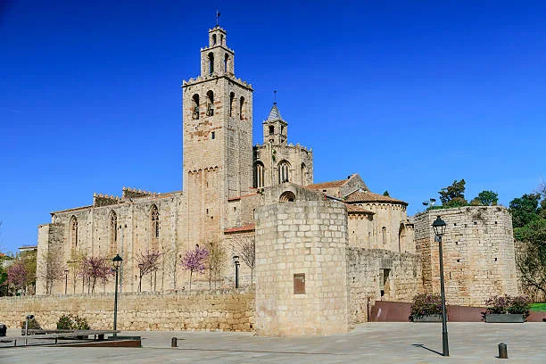
GUÍA LOCALSant Cugat ↗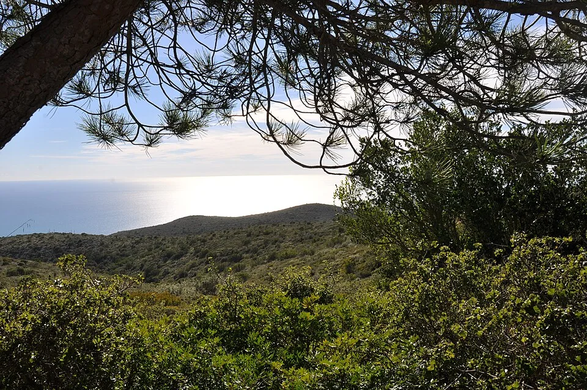
COMARCAGarraf ↗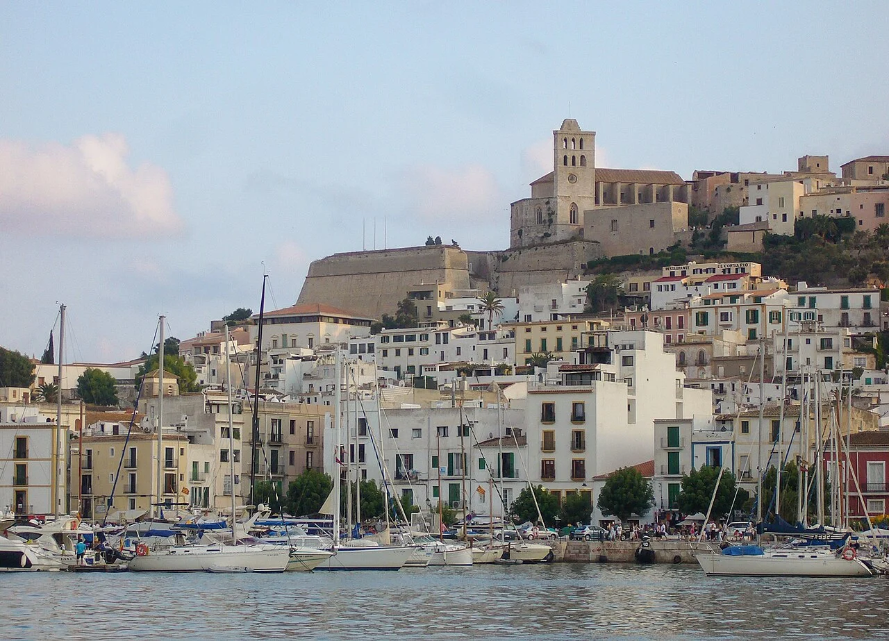
ISLASEivissa y Formentera ↗Garraf articula el recorrido comarcal; Castelldefels y Sant Cugat amplían la red en Barcelona; Eivissa y Formentera abren la dimensión insular.
Próximamente
Nuevas guías locales en preparación
- Badalona
- Cadaqués
- Calafell
- Girona
- Lleida
- Salou
- Tarragona
- Vilafranca
El sentido de esta red
Más caminos para llegar al conocimiento.
MateriasRelacionesTerritorios
Enciclopedias Sí es una puerta de entrada a los proyectos de Alex Rosàs. Organiza las enciclopedias por materias, presenta las guías por territorios y propone conexiones que ayudan a descubrir otras webs.
Planetpedia conserva su espacio propio: amplía la red con contenidos sobre Universo y Planeta Tierra y ofrece otra forma de explorar los proyectos.
Las fotografías proceden de las portadas consultadas. Cuando no se ha localizado una imagen adecuada se utiliza una identidad visual provisional, sin asignar una foto ajena al proyecto.
Inventario, fuentes de las imágenes y estado de revisión · 15 de noviembre de 2026
Modelo editorial basado en los dominios mencionados y sus portadas. La respuesta técnica de una portada no es una auditoría de todo su contenido. Las interrelaciones son propuestas de navegación, no prueba de que existan artículos enlazados entre sí. Las imágenes conservan los derechos y condiciones de sus fuentes originales; antes de publicación pública debe confirmarse la reutilización en este portal.
- Classicapedia · Portada revisada · Fuente de imagen
- Pinacopedia · Portada revisada · Fuente de imagen
- Filopedia · Portada revisada · Fuente de imagen
- Cinematopedia · Portada revisada · Fuente de imagen
- Mythicapedia · Portada revisada · Fuente de imagen
- Newtonpedia · Portada revisada · Fuente de imagen
- Medicapedia · Portada revisada · Fuente de imagen
- Psycholopedia · Portada revisada · Fuente de imagen
- Escolapedia · Portada revisada · Fuente de imagen
- Leypedia · Portada revisada · Fuente de imagen
- Culinapedia · Portada revisada · Fuente de imagen
- WorldWinepedia · Portada revisada · Fuente de imagen
- Tenispedia · Portada revisada · Fuente de imagen
- Ludicopedia · Portada revisada · Fuente de imagen
- CatDogpedia · Portada revisada · Fuente de imagen
- Farmacos.ai · Portada revisada · Fuente de imagen
- Enfermería Sí · Portada revisada · Fuente de imagen
- Saber Invertir · Revisar acceso · Sin fotografía de portada localizada
- Celebraciones · Revisar contenido · Sin fotografía de portada localizada
- Sustainable Fashion Fest · Portada revisada · Fuente de imagen
- Moda Sostenible · Revisar acceso · Sin fotografía de portada localizada
- Zodiacopedia · Portada revisada · Fuente de imagen
- Sitges · Portada revisada · Fuente de imagen
- Sant Pere de Ribes · Portada revisada · Fuente de imagen
- Castelldefels · Portada revisada · Fuente de imagen
- Vilanova i la Geltrú · Portada revisada · Fuente de imagen
- Sant Cugat · Portada revisada · Fuente de imagen
- Garraf · Portada revisada · Fuente de imagen
- Eivissa y Formentera · Portada revisada · Fuente de imagen
- Planetpedia · Portada revisada · Fuente de imagen
- IApedia · Dominio indicado · Fuente de imagen
Incidencias: Saber Invertir y Moda Sostenible devolvieron HTTP 503 en la comprobación; Celebraciones mostró una portada mínima. Sus enlaces se mantienen con aviso de revisión.